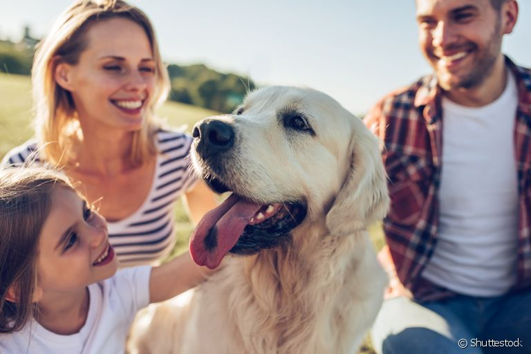
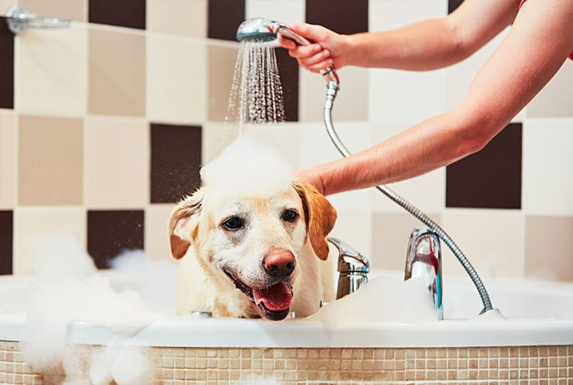
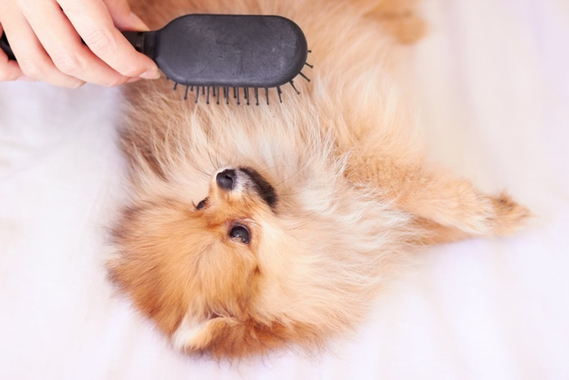
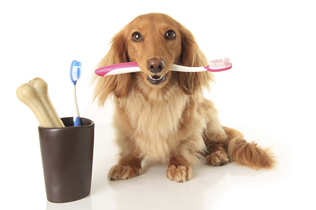
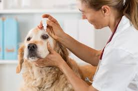
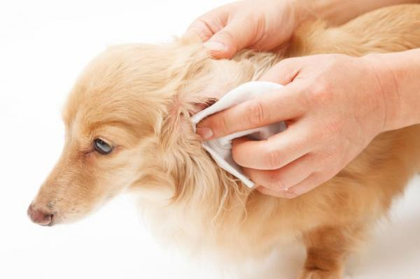
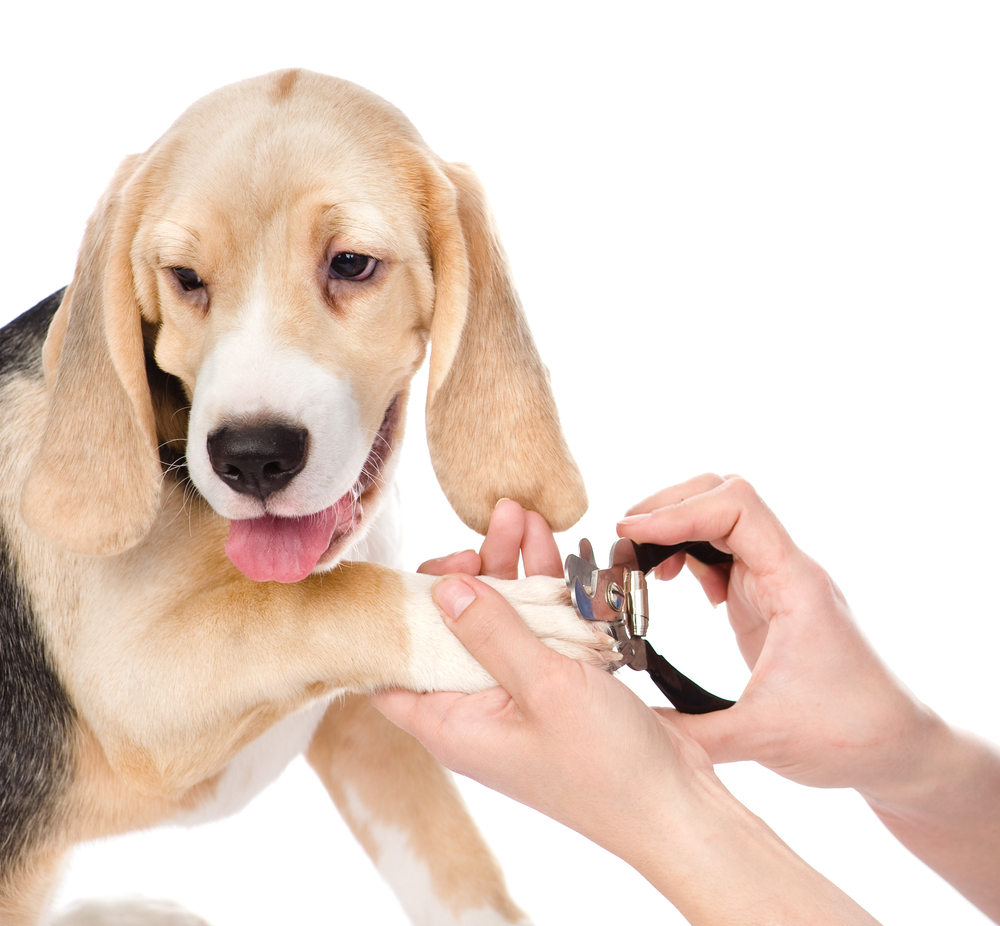

Higiene

Igualmente às pessoas, que tem o costume de escovar os dentes logo após as refeições, tomar banho todos os dias, pentear os cabelos, hidratar a pele, aparar (ou depilar) os pelos, cortar as unhas, limpar as orelhas e outros muitos rituais para uma vida saudável, há também uma rotina de higiene dos pets.
A qualidade de vida dos bichinhos depende da limpeza deles, que se estão sujos carregam microorganismos, como bactérias e fungos, capazes de ocasionar os mais diversos tipos de doenças. Então, é primordial a prática da higiene do seu bichinho. O mau-hálito do cão é uma das maiores queixas dos seus donos, porém, é falta de cuidado deles mesmos esta causa, pois a escovação deve ser feita, no mínimo, três vezes por semana. Saiba como ter seu pet “sempre em dia”!
Por isso, separamos alguns aspectos imprecindíveis para a higiene e saúde de seu animalzinho, juntamente com algumas dicas de cuidado.
Também selecionamos alguns vídeos tutoriais de como realizar alguns cuidados com o seu pet!
Além dos recomendados aqui no portal, também há uma enorme variedade na internet que você pode pesquisar. Um canal do YouTube que o Dogs by Me recomenda é o Ju Almeida Pet. A Ju é dona de pet shop e especialista em cuidados com o pet, lá você pode encontrar uma porção de informações para te ajudar a tratar seu animalzinho da melhor maneira possível!
Banho

Os banhos devem ser dados em um intervalo de uma a duas semanas. A pele dos animais é muito mais sensível do que a nossa, e possui uma camada de gordura que é essencial para a proteção. O excesso de banho em um período curto de tempo pode causar o desgaste dessa camada protetora, levando ao aparecimento de doenças de pele em cães.
Durante o banho, fique atento à proteção dos olhos e dos ouvidos e evite a entrada de água e de shampoo nessas regiões — pois isso pode causar alguns tipos de alergia canina e inflamações.
É recomendado colocar um pequeno pedaço de algodão nos ouvidos do seu cãozinho antes de iniciar o banho.
Outra dica importante durante a higiene para cachorros é secar com muito cuidado seu animal após o banho, principalmente entre as patas e na superfície externa da orelha. A umidade nessas áreas pode causar a proliferação de fungos na pele, dermatites e infecções. Para secá-lo, utilize toalhas de banho e um secador de cabelo — caso o tempo esteja nublado ou o banho seja dado à noite.
Além disso, use sempre shampoos, condicionadores, loções e demais produtos para cachorro. Os cosméticos desenvolvidos para animais são menos agressivos e possuem pH ideal para a pele dos cães.
Nunca use sabonetes, detergentes ou desinfectantes.
Escovação dos pelos
 A escovação dos pelos depende muito da raça do seu cachorro. Animais de pelos longos e cheios exigem uma escovação diária. Uma parte indispensável nos cuidados com cães, essa escovação é importante para evitar o surgimento de nós causados por pelos embolados nos animais, o que gerar um grande desconforto para eles.
Tosa higiênica
 Que todo pet tem de tomar banho, passar o secador, ter os seus pelos finalizados e ficar lindo com a gravatinha ou fitinha na cabeça todos sabem. Mas a tosa higiênica também é fundamental para que ele tenha sua parte genital e as patinhas sempre limpas.
Que todo pet tem de tomar banho, passar o secador, ter os seus pelos finalizados e ficar lindo com a gravatinha ou fitinha na cabeça todos sabem. Mas a tosa higiênica também é fundamental para que ele tenha sua parte genital e as patinhas sempre limpas.
Os animais de pelagens compridas podem ficar com seus pelos muito embaraçados, ter estas regiões abafadas, causando o aparecimento de dermatites, micoses e fungos, o que faz cair os pelos, além deste procedimento prevenir o aparecimento de pulgas e carrapatos. Portanto, consulte um profissional capacitado e faça esta tosa sempre que necessário, para que ele esteja continuamente com os lugares necessários aparados e a higiene de cães e gatos em perfeitas condições.
Colocamos um vídeo demostrando tosa higiênica logo abaixo como curiosidade caso você, dono de pet, queira aprender. Lembrando que a recomendação é que o corte seja realizado por um especialista!
Escovação dos dentes

A escovação dentária é um processo fundamental para a saúde do seu cachorro. Ela deve ser feita com cuidado, principalmente no caso de filhotes.
Inicialmente, pode-se escovar com uma pasta de dente para cachorro e o seu próprio dedo indicador, fazendo movimentos circulares na boca do cãozinho. Assim, o seu pet vai entendendo aos poucos o processo. Depois de um tempo, pode-se utilizar uma dedeira ou uma escova de dente para cachorro — que são encontradas em pet shops.
A saúde bucal do seu animal é importante para a prevenção de tártaro, que causa mau hálito, a formação de placas bacterianas e gengivite. Em casos mais graves, pode levar a infecções no estômago. Também existem biscoitos, petiscos, brinquedos e rações que ajudam na limpeza dos dentes e na redução do tártaro canino.
Limpeza dos olhos e ouvidos

A limpeza dos olhos e dos ouvidos pode ser feita após o banho. O recomendado pelos profissionais especializados é que essa higienização seja feita uma vez por semana. Existem produtos específicos para esses locais. Basta usá-los juntamente com algodão ou gaze e realizar a limpeza. Olhos e ouvidos também podem ser limpos com soro fisiológico.
Algumas raças possuem excesso de lágrimas, que se acumulam nos olhos e nos pelos ao redor. Nesses casos, a higiene da área é ainda mais importante, pois evita infecções oculares, sendo necessário em alguns casos o uso de colírios.
Cuidados com o ouvido

É importante que os ouvidos do seu cachorro estejam sempre bem secos e limpos. A higienização da parte externa do ouvido pode ser feita por meio do uso de algodão ou cotonetes — isso evita o aparecimento de otite cabina.
Como os ouvidos dos cães são muito delicados, evite passar o cotonete na parte interna, pois isso pode causar ferimentos no animal.
Unhas
 As unhas dos animais são frágeis, por isso devem ser aparadas por especialistas, que sabem o tamanho certo e necessário, além de terem o cortador de unha para cachorro ou felinos específicos. Deste modo, evita também que haja qualquer machucado, infecção ou inflamação pelo corte errado, já que há um limite entre a lâmina (unha) e um vasinho (aquela parte cor-de-rosa), assim como nos humanos, que no caso seria a “carne”.